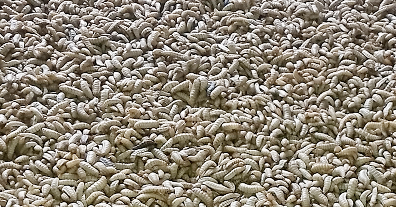
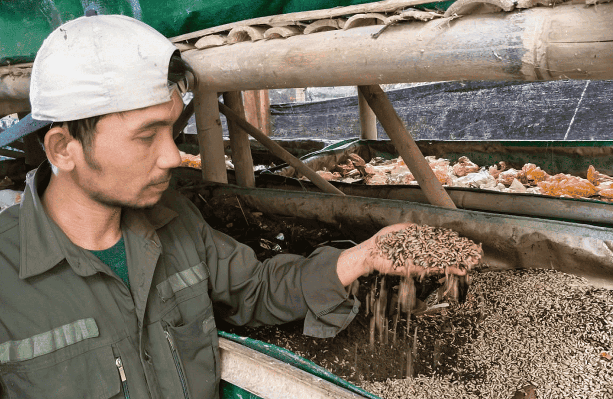

26 Agustus 2025
Pengertian, Manfaat, Risiko, dan Cara Pengelolaan
Apa itu maggot, siklus hidup, peran ekologis, manfaat untuk pakan & pengolahan sampah, hingga risiko dan tips praktik aman.
Apa itu Maggot?
Maggot adalah larva dari ordo Diptera (lalat). Pada fase ini, tubuhnya lunak, tidak berkaki, berwarna putih-krem, dan sangat aktif makan. Dalam peternakan & pengelolaan sampah, yang paling populer adalah larva Black Soldier Fly (BSF, Hermetia illucens) karena efisien mengurai sampah organik dan aman digunakan sebagai bahan pakan.


Manfaat & Pemanfaatan
- Pengurai Sampah Organik: menurunkan volume dan bau, mempercepat dekomposisi.
- Pakan Bernutrisi: tinggi protein & lemak untuk ikan, unggas, dan hewan eksotik.
- Produk Turunan: tepung maggot, minyak larva, frass (kotoran) sebagai pupuk organik.
- Ekonomi Sirkular: ubah limbah dapur menjadi nilai (pakan & pupuk) yang dapat dijual.
- Medis & Forensik: maggot steril untuk terapi luka; referensi waktu kematian pada forensik.
| Peran | Keterangan |
|---|---|
| Pengurai | Mempercepat penguraian sisa organik, menekan bau & vektor penyakit. |
| Pakan | Sumber protein/lemak; dapat dikeringkan atau dijadikan tepung. |
| Pupuk | Frass meningkatkan kesuburan tanah dan kesehatan mikroba. |
Risiko & Pencegahan
- Myiasis: hindari kontak dengan luka terbuka; praktikkan higienitas.
- Infestasi & Bau: jaga kepadatan, aerasi, dan kadar air media; tutup rapat.
- Kontaminasi: gunakan bahan baku bersih—hindari limbah berbahaya atau berminyak berlebih.
Tips: Untuk pemula, mulai skala kecil (5-10 kg/hari), gunakan wadah berlubang & atur drainase lindi.